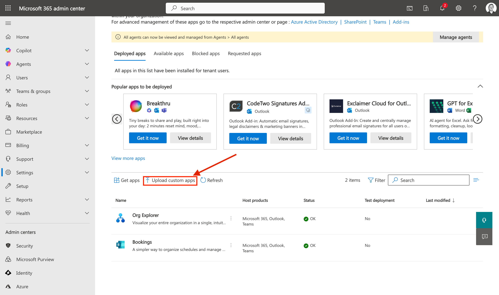
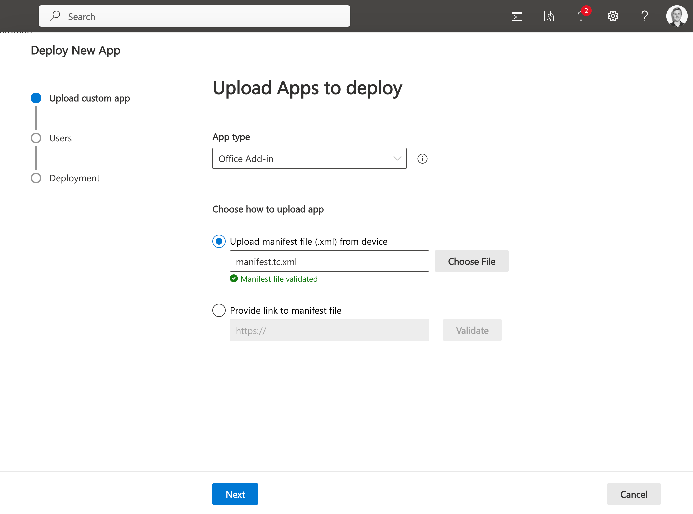
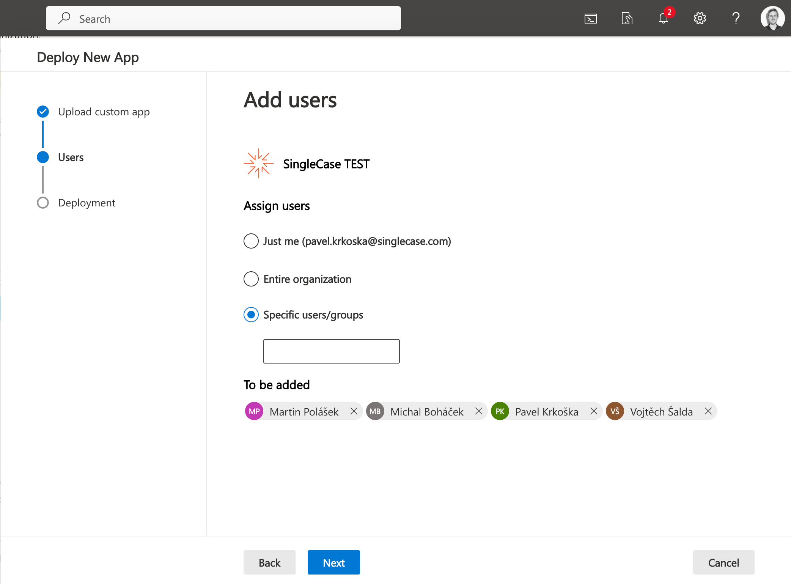
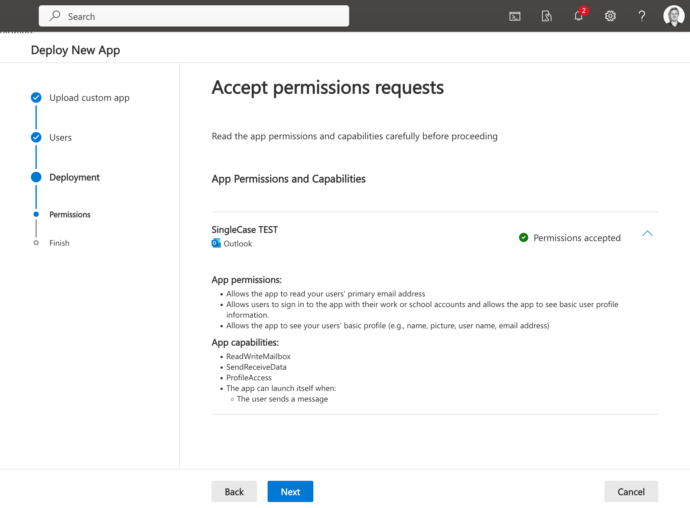
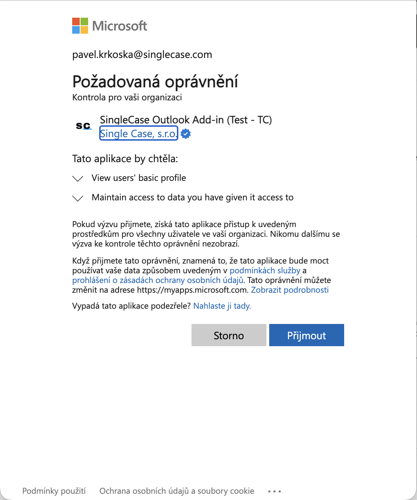
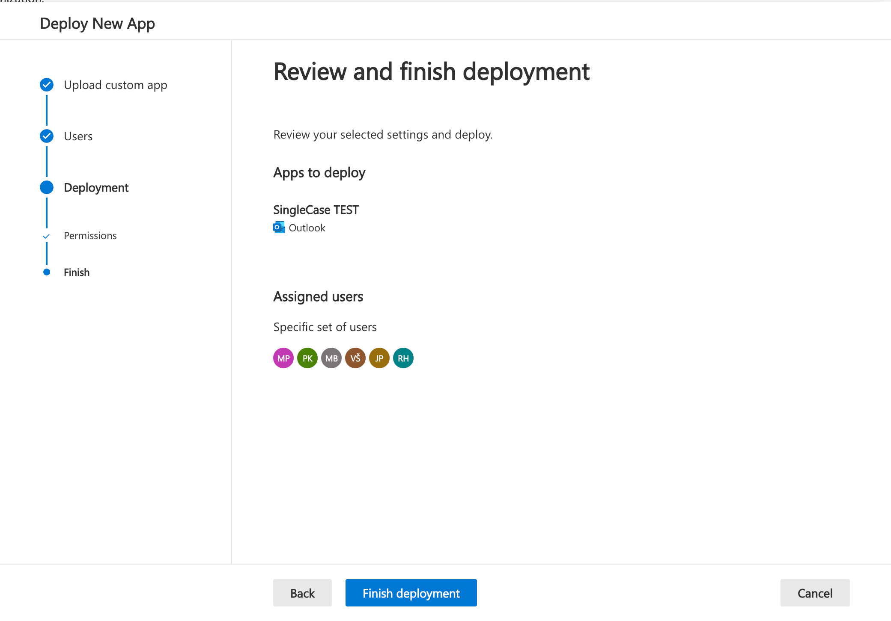
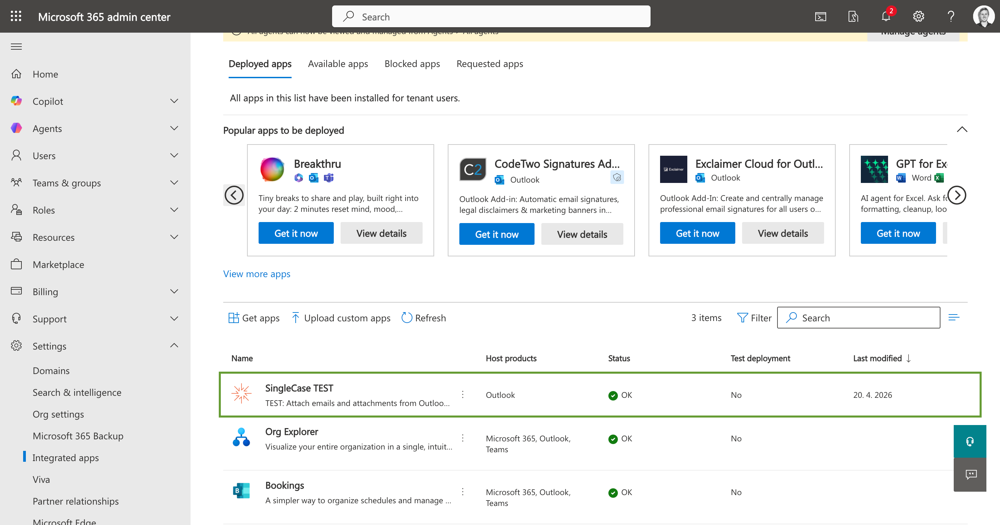
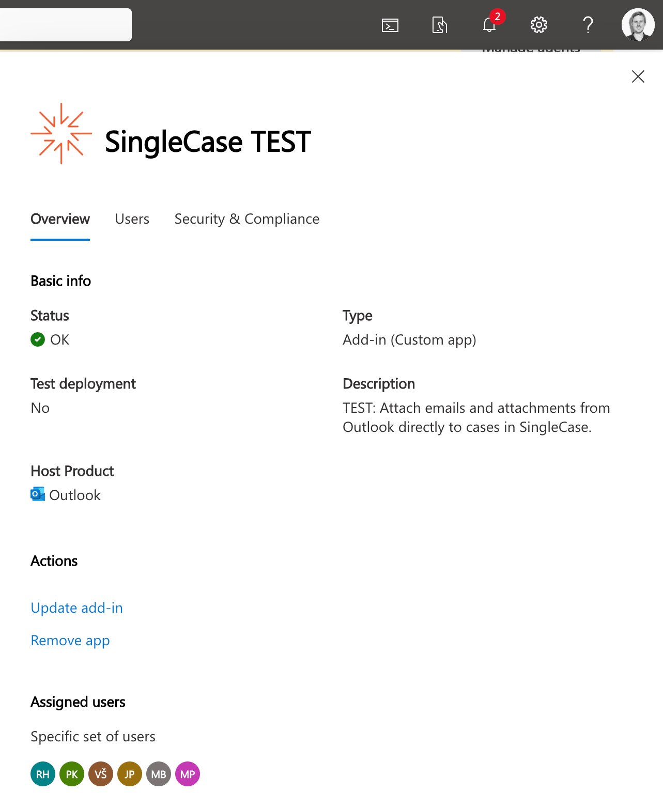

Nasazení pro organizaci
Nasaďte doplněk SingleCase pro Outlook v celé organizaci — nebo jen pro vybranou skupinu uživatelů — prostřednictvím Centra pro správu Microsoft 365. Po nasazení není ze strany koncových uživatelů vyžadována žádná akce.
Soubory manifestu
Správný soubor manifestu pro vaše prostředí získáte pomocí Generátoru manifestu. Zadejte URL vašeho SingleCase workspace a soubor stáhněte.
Požadavky
Před zahájením se ujistěte, že máte k dispozici následující:
Oprávnění správce
Účet Microsoft 365 s rolí Globální správce nebo Správce aplikací.
Soubor manifestu
Stáhněte správný soubor pomocí Generátoru manifestu.
Tenant Microsoft 365
Uživatelé musí mít účty Microsoft 365 s přístupem k Outlooku (Exchange Online nebo Outlook na webu).
Otevření integrovaných aplikací v Centru pro správu
Přihlaste se do Centra pro správu Microsoft 365 na adrese admin.microsoft.com a v levém postranním panelu přejděte na Nastavení → Integrované aplikace.
Na kartě Nasazené aplikace klikněte na Nahrát vlastní aplikace (pro soubor manifestu) — nebo použijte vyhledávací pole k nalezení SingleCase v Microsoft 365 App Store a vyberte jej.

Nastavení → Integrované aplikace — klikněte na „Nahrát vlastní aplikace" a začněte.
Nahrání souboru manifestu
Pokud nahráváte manifest: v průvodci Nasadit novou aplikaci vyberte jako typ aplikace Office Add-in a nahrajte stažený soubor manifestu.
Centrum pro správu soubor automaticky ověří. Počkejte na zelené potvrzení Soubor manifestu ověřen a poté klikněte na Další.

Vyberte „Office Add-in", nahrajte manifest a počkejte na zelené potvrzení ověření.
Přiřazení uživatelů
V kroku Přidat uživatele zvolte, kdo má doplněk obdržet:
| Možnost | Kdo doplněk obdrží | Doporučené použití |
|---|---|---|
| Jen já | Pouze váš účet | Rychlé ověření před nasazením pro ostatní |
| Celá organizace | Všichni uživatelé ve vašem tenantovi Microsoft 365 | Nasazení pro celou firmu |
| Konkrétní uživatelé / skupiny | Definovaný seznam jednotlivých uživatelů nebo bezpečnostních skupin | Cílené nebo postupné nasazení |
Pokud zvolíte Konkrétní uživatelé / skupiny, zadejte do vyhledávacího pole jméno nebo e-mail každého uživatele a přidejte ho do seznamu. Po dokončení klikněte na Další.

Vyberte „Konkrétní uživatelé/skupiny" a vyhledejte uživatele nebo skupiny, které chcete přidat.
Kontrola a přijetí oprávnění
Průvodce zobrazí souhrn všech oprávnění a schopností aplikace, které SingleCase požaduje. Před pokračováním je pečlivě zkontrolujte.
Doplněk SingleCase požaduje následující:
Oprávnění aplikace
- Čtení primární e-mailové adresy uživatelů
- Umožnění přihlášení uživatelů pomocí pracovního nebo školního účtu (přístup k základnímu profilu)
- Čtení základního profilu uživatele (jméno, fotografie, uživatelské jméno, e-mailová adresa)
Schopnosti aplikace
- ReadWriteMailbox — přístup ke čtení a zápisu položek poštovní schránky pro umožnění archivace
- SendReceiveData — odesílání a příjem dat na server SingleCase
- ProfileAccess — přístup k uživatelskému profilu pro ověřování identity
- Aplikace se může spouštět automaticky při odeslání zprávy uživatelem

Zkontrolujte seznam oprávnění — před kliknutím na Další by měl stav zobrazovat „Oprávnění přijata".
Pokud se zobrazí dialog souhlasu Microsoft s žádostí o přijetí oprávnění jménem vaší organizace, klikněte na Accept (Přijmout). Tím udělíte aplikaci přístup pro všechny přiřazené uživatele, aniž by každý z nich musel souhlas udělovat samostatně.

Přijměte souhlas platný pro celou organizaci jménem svých uživatelů.
Pokračujte kliknutím na Další.
Kontrola a dokončení nasazení
Poslední obrazovka průvodce zobrazuje souhrn veškerého nastavení:
- Nasazovaná aplikace (SingleCase pro Outlook)
- Přiřazení uživatelé nebo skupiny
Potvrďte správnost údajů a klikněte na Dokončit nasazení.

Zkontrolujte souhrn a klikněte na „Dokončit nasazení" pro dokončení procesu.
Ověření nasazení
Po dokončení nasazení se SingleCase zobrazí v seznamu Nasazených aplikací na stránce Integrované aplikace se stavem ✔ OK.

SingleCase se nyní zobrazuje v seznamu nasazených aplikací se stavem OK.
Kliknutím na řádek aplikace otevřete panel s podrobnostmi. Zde můžete:
- Zobrazit stav nasazení, typ aplikace a popis
- Zkontrolovat, kteří uživatelé jsou přiřazeni
- Pomocí Aktualizovat doplněk nahrát novou verzi manifestu
- Pomocí Odebrat aplikaci odinstalovat doplněk od všech přiřazených uživatelů

Panel s podrobnostmi aplikace — spravujte přiřazené uživatele a aktualizujte nebo odeberte doplněk.
Po nasazení
Uživatelský zážitek
Přiřazení uživatelé uvidí tlačítko SingleCase ve svém pásu karet Outlooku (Windows, Mac) nebo ikonu aplikace v Outlooku na webu při příštím otevření Outlooku. Při prvním použití budou vyzváni k přihlášení do svého pracovního prostoru SingleCase — tento krok se provede pouze jednou.
Automatické aktualizace
Doplněk se aktualizuje automaticky. Jakmile SingleCase zveřejní novou verzi, všichni přiřazení uživatelé obdrží aktualizaci při příštím otevření Outlooku. Opakované nasazení není potřeba.
Výjimkou jsou změny metadat: protože je SingleCase doplněk pro firmu (LOB), musí administrátor nahrát nový soubor manifestu — vyberte doplněk a klikněte na tlačítko Aktualizovat v pravém dolním rohu; doplněk se pak aktualizuje při dalším spuštění Outlooku.
Správa uživatelů po nasazení
Chcete-li přidat nebo odebrat uživatele po počátečním nasazení, otevřete panel s podrobnostmi aplikace v části Nastavení → Integrované aplikace a přejděte na kartu Uživatelé. Změny se projeví v rámci standardní doby šíření.
Odebrání doplňku
Chcete-li doplněk odinstalovat od všech uživatelů, otevřete panel s podrobnostmi aplikace a klikněte na Odebrat aplikaci. Tím se doplněk odebere ze všech instalací Outlooku přiřazených uživatelů.